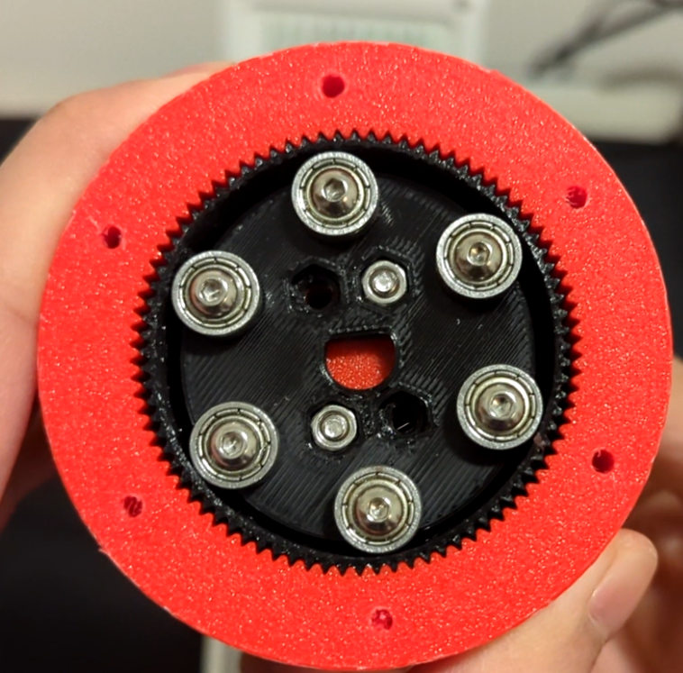

Harmonic Gearbox

Introduction
Harmonic gearboxes are marvels of engineering that have always fascinated me. It's amazing that someone thought "hey, let's make a FLEXIBLE gear" and it worked. Naturally, I had to try to make my own to better understand it. A flexible PLA cup with 82 tiny teeth, what could go wrong?
Design
I took Harmonic Drive's SHG series component set as inspiration because I assembled it at work. It consists of an elliptical wave generator, a cup-shaped flex spline, and a rigid circular spline.
To simplify the design of the wave generator (at the cost of performance), I opted for 6 radial ball bearings instead of a continuous array of ball bearings in an elliptical pattern.
With 82 teeth on the flex spline and 80 teeth on the circular spline, the gear ratio comes out to 40:1. Though it wasn't tested, I wouldn't expect much efficiency out of it. But look at it spin!
Challenges
The gearbox didn't work the first time, or the second, or the third...
It actually took many iterations to get it to rotate smoothly without stalling the motor. The flex spline had to be as thin as possible without breaking under tension, and PLA is fairly stiff so it resists flexing. To get enough compliance without reducing the wall thickness any further, the only other option was to adjust the depth of the cup, which means sacrificing form factor for compliance.
The geometry of the wave generator was also a major factor. It had to push the teeth at two ends of the flex spline against the circular spline with sufficient force that it doesn't skip, but if it's too tight then it gets stuck or the motor stalls.